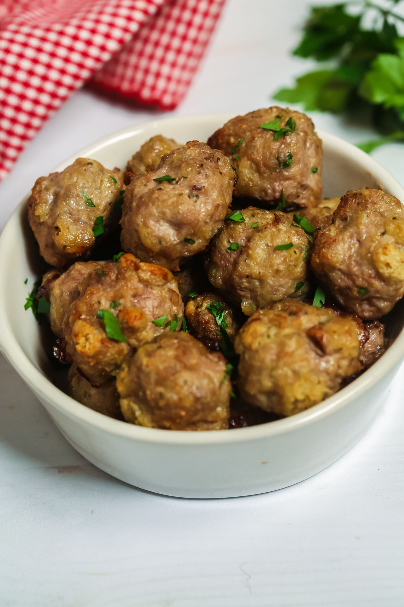

Baked Meatballs

Prep Time: 25 mins
Yield: 4 servings
Ingredients:
- 500g ground beef
- 1/2 cup breadcrumbs
- 1 egg
- 1 teaspoon salt
- 1/2 teaspoon black pepper
- 1 teaspoon garlic powder
- 1 teaspoon onion powder
- 1/2 cup grated Parmesan cheese
- 1/4 cup chopped parsley
- 1/2 cup marinara sauce
Steps:
- Preheat oven to 200°C (400°F) and line a baking sheet with parchment paper.
- In a large bowl, mix ground beef, breadcrumbs, egg, salt, pepper, garlic powder, onion powder, Parmesan cheese, and parsley.
- Shape the mixture into small meatballs and place them on the baking sheet.
- Bake for 15-20 minutes until golden brown and cooked through.
- Heat marinara sauce in a pan and toss the baked meatballs in the sauce.
- Serve warm with pasta or bread.